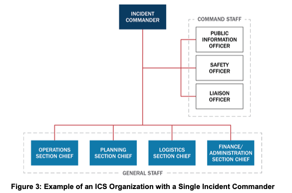
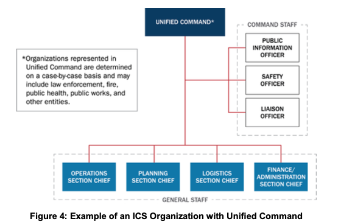
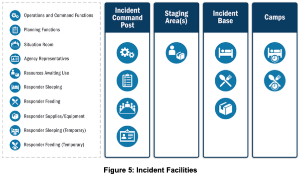
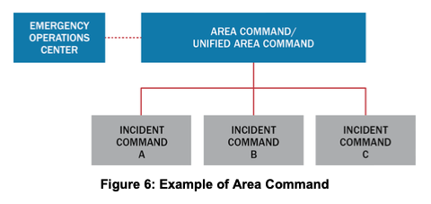
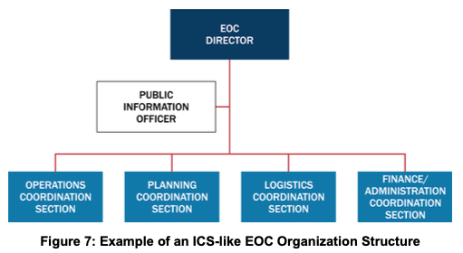
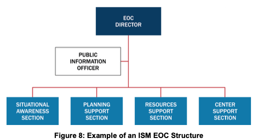
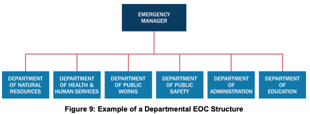
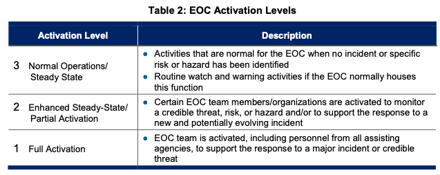
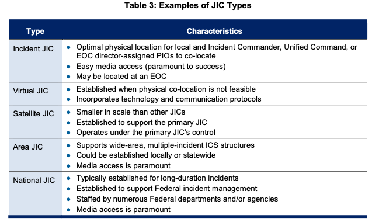
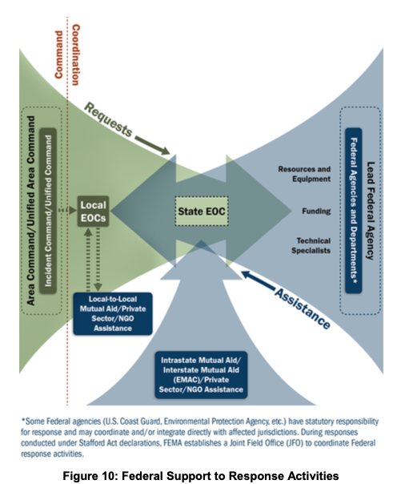

제3장 지휘 및 조정 (III. Command and Coordination)
참고 원문: National Incident Management System (Third Edition, October 2017) - Chapter III (pp. 19–49)
작성 원칙: GEMINI.md의 연구자료(SUB-NOTE) 사용 10대 기본 원칙에 입각하여 원문의 단락, 도표(Figure 3–10, Table 2–3), 인셋 박스, 각주(Footnotes 9–18)를 단 하나의 누락이나 임의 왜곡 없이 100% 충실하게 정리하고 주요 학술·실무 개념에 영문을 병기함. 원문 연구 결과(제1절~제7절)와 연구자의 비교·해석(제8절~제10절)은 엄격히 분리함.
1. 개요 (Introduction to Command and Coordination) (원문 p. 19)
1.1 배경 및 4대 핵심 책임 영역 (원문 p. 19)
- 단일 관할에서 다관할·다학제로의 확장: 지방 당국은 대부분의 사건을 단일 관할구역(Single jurisdiction) 내의 통신 시스템, 지령센터(Dispatch centers), 사건 관리 인력을 사용하여 처리함. 그러나 더 크고 복잡한 사건은 단일 관할구역에서 시작되더라도 외부 자원과 지원을 필요로 하는 다관할(Multijurisdictional) 및/또는 다학제(Multidisciplinary) 노력으로 급격히 확장될 수 있음.
- 표준 지휘·조정 시스템의 역할: 표준 사건 지휘 및 조정 시스템은 이러한 외부 자원의 효율적인 통합을 가능하게 하며, 미 전역 어디에서 온 지원 인력이라도 사건 관리 구조에 참여할 수 있게 해줌. NIMS의 지휘 및 조정 구성요소는 사건 관리를 위한 표준 국가 프레임워크를 제공하는 시스템, 원칙, 구조를 기술함.
- 사건 지휘 및 조정의 4대 책임 영역 (Four Areas of Responsibility) (원문 p. 19):
사건의 규모, 복잡성, 범위와 관계없이 효과적인 지휘와 조정은 인명을 구조하고 상황을 안정화하는 데 기여하며, 다음 4가지 책임 영역으로 구성됨:- 현장에서 자원을 적용하기 위한 전술적 활동 (Tactical activities to apply resources on scene);
- 일반적으로 긴급운영센터(EOC) (각주 9 참조)에서 운영적·전략적 조정, 자원 획득, 정보 수집·분석·공유를 통해 수행되는 사건 지원 (Incident support);
- 정책 지침 및 고위급 의사결정 (Policy guidance and senior-level decision making);
- 언론 및 대중에게 사건에 관한 정보를 지속적으로 알리기 위한 대외 소통 및 커뮤니케이션 (Outreach and communication with the media and public).
[ 재난 지휘 및 조정의 4대 핵심 책임 영역 (원문 p. 19) ]
┌────────────────────────────────────────────────────────┐
│ 1. 전술적 활동 (Tactical Activities on Scene) │
│ - 현장 자원 투입 및 직접적 작전 실행 (ICS) │
├────────────────────────────────────────────────────────┤
│ 2. 사건 지원 (Incident Support) │
│ - 운영·전략적 조정, 자원 획득, 정보 수집·분석 (EOC) │
├────────────────────────────────────────────────────────┤
│ 3. 정책 지침 및 고위 의사결정 (Policy Guidance) │
│ - 선출직/임명직 기관장 중심의 우선순위 결정 (MAC Group)│
├────────────────────────────────────────────────────────┤
│ 4. 대외 소통 및 대국민 공보 (Outreach & Communication) │
│ - 언론 및 대국민 정보 제공, 유언비어 차단 (JIS / JIC)│
└────────────────────────────────────────────────────────┘1.2 다기관조정시스템 (MACS)과 통일된 교리 (원문 p. 19)
- 다기관조정시스템 (Multiagency Coordination Systems, MACS): 위 4대 책임 영역을 NIMS의 서로 다른 기능 그룹들—현장지휘체계(ICS), 긴급운영센터(EOCs), 다기관조정그룹(MAC Groups), 합동정보체계(Joint Information Systems, JIS)—간에 조정하기 위해 존재함.
- 통일된 교리 (Unified Doctrine): 지휘 및 조정 구성요소는 이러한 MACS 구조들을 기술하고 서로 다른 사건 관리 계층에서 작동하는 다양한 요소들이 어떻게 상호 인터페이스하는지 설명함. 공통 용어, 조직 구조, 운영 프로토콜을 갖춘 통일된 교리(Unified doctrine)를 기술함으로써, NIMS는 현장의 현장지휘관(Incident Commander)부터 대규모 재난 시 국가 지도자들에 이르기까지 사건에 관련된 모든 주체들이 노력을 조화시키고 효과를 극대화할 수 있게 함.
📌 [원문 각주 9 전수 번역 및 해설 (Footnote 9, p. 19)]
- 각주 9 (EOC 용어의 포괄적 사용, p. 19): 사건 지원은 가상 구조(Virtual structures)뿐만 아니라 매우 다양한 시설에서 수행되기 때문에, NIMS는 긴급조정센터(Emergency coordination centers)를 포함한 그러한 모든 시설을 지칭하기 위해 "EOC"라는 용어를 사용함.
2. A. NIMS 14대 관리 특성 (NIMS Management Characteristics) (원문 pp. 20–23)
다음의 14가지 관리 특성(Management characteristics)은 NIMS 하에서 사건 지휘 및 조정의 토대(Foundation)를 이루며 전체 시스템의 강점과 효율성에 기여함.
┌────────────────────────────────────────────────────────────────────────┐
│ NIMS 14대 핵심 관리 특성 (Management Characteristics) │
├────────────────────────────┬────────────────────────────┬──────────────┤
│ 조직 및 지휘 체계 │ 작전 및 목표 관리 │ 자원 및 통신 │
├────────────────────────────┼────────────────────────────┼──────────────┤
│ 1. 공통 용어 │ 3. 목표에 의한 관리 │ 7. 포괄적 │
│ (Common Terminology) │ (Management by Objectives) │ 자원관리 │
│ 2. 모듈식 조직 │ 4. 사건활동계획 수립 │ 8. 통합 통신 │
│ (Modular Organization) │ (Action Planning - IAP) │ 13. 파견/배치│
│ 9. 지휘권 확립 및 인계 │ 5. 관리 가능한 통제 범위 │ 통제 │
│10. 통합지휘 (Unified Cmd) │ (Span of Control 1:5) │ 14. 정보 및 │
│11. 지휘계통 & 명령통일 │ 6. 사건 시설 및 위치 │ 첩보관리 │
│12. 책무성 (Accountability) │ (ICP, Staging Area 등) │ │
└────────────────────────────┴────────────────────────────┴──────────────┘2.1 조직 및 지휘 체계 관련 특성 (원문 pp. 20–23)
- 공통 용어 (Common Terminology) (원문 p. 20):
- NIMS는 다양한 사건 관리 및 지원 조직들이 광범위한 기능과 위험 시나리오에 걸쳐 함께 일할 수 있도록 공통 용어를 확립함. 이 공통 용어는 다음 3가지를 포괄함:
- 조직 기능 (Organizational Functions): 사건 책임을 가진 주요 기능 및 기능 단위들이 명명되고 정의됨(사건 조직 요소의 용어는 표준적이고 일관됨).
- 자원 기술 (Resource Descriptions): 인력, 장비, 팀, 시설을 포함한 주요 자원에 공통 명칭이 부여되고 혼란 방지 및 상호운용성 향상을 위해 유형화(Typed)됨.
- 사건 시설 (Incident Facilities): 사건 관리 시설은 공통 용어를 사용하여 지정됨.
- NIMS는 다양한 사건 관리 및 지원 조직들이 광범위한 기능과 위험 시나리오에 걸쳐 함께 일할 수 있도록 공통 용어를 확립함. 이 공통 용어는 다음 3가지를 포괄함:
- 모듈식 조직 (Modular Organization) (원문 pp. 20–21):
- ICS 및 EOC 조직 구조는 사건의 규모, 복잡성, 위험 환경에 기반하여 모듈식(Modular fashion)으로 발전함.
- ICS 조직과 EOC 팀을 수립하고 확장할 궁극적인 책임은 현장지휘관(또는 통합지휘)과 EOC 본부장(EOC director) (각주 11 참조)에게 있음.
- 기본 책임 귀속 원칙: 부하가 수행하는 기능에 대한 책임은 감독자가 그 책임을 위임할 때까지 차상위 감독 직위(Next higher supervisory position)에 자동으로 귀속(Defaults)됨. 사건 복잡성이 증가함에 따라 지휘관과 감독자들이 추가적인 기능적 책임을 위임하면서 조직이 확장됨.
- 지휘권 확립 및 인계 (Establishment and Transfer of Command) (원문 p. 22):
- 현장지휘관 또는 통합지휘는 사건 초기부터 지휘 기능을 명확히 확립해야 함. 사건에 대해 일차적 책임(Primary responsibility)을 가진 관할구역이나 조직은 지휘권을 확립할 현장 책임자와 지휘권 인계 프로토콜을 지정함.
- 지휘권이 인계될 때, 인계 프로세스에는 안전하고 효과적인 작전을 지속하기 위한 필수 정보를 담은 브리핑(Briefing)과 사건에 참여하는 모든 인력에 대한 통지(Notifying all personnel)가 포함됨.
- 통합지휘 (Unified Command, UC) (원문 pp. 22–23):
- 단일 관할구역, 기관 또는 조직이 독자적으로 사건을 관리할 일차적 권한 및/또는 자원을 갖지 못할 때 통합지휘가 수립될 수 있음. 통합지휘에는 단일 "지휘관(Commander)"이 존재하지 않으며, 대신 공동으로 승인된 목표(Jointly approved objectives)에 의해 사건을 관리함.
- 통합지휘는 참여 조직들이 중첩·경쟁하는 권한, 관할구역 경계, 자원 소유권과 같은 문제를 제쳐두고 사건을 위한 명확한 우선순위와 목표 설정에 집중할 수 있게 함. 그 결과 달성되는 노력의 통일성(Unity of effort)을 통해 소유권이나 위치에 관계없이 자원을 배분할 수 있으며, 통합지휘는 개별 기관의 고유 권한, 책임, 책무성(Individual agency authority, responsibility, or accountability)에 영향을 주지 않음.
- 지휘 계통 및 명령 통일 (Chain of Command and Unity of Command) (원문 pp. 20, 23):
- 지휘 계통(Chain of command): 사건 관리 조직의 계층 내에서 질서 있는 권한의 라인(Orderly line of authority)을 의미함 (각주 10 참조).
- 명령 통일(Unity of command): 각 개인이 오직 한 사람에게만 보고(Each individual only reports to one person)하는 것을 의미함. 이는 보고 관계를 명확히 하고 복수의 상충되는 지시(Multiple, conflicting directives)로 인한 혼란을 줄여 모든 계층의 리더십이 부하 인력을 효과적으로 지휘할 수 있게 함.
- 책무성 (Accountability) (원문 p. 23):
- 사건 중 자원에 대한 효과적인 책무성은 필수적임. 사건 인력은 체크인/체크아웃(Check-in/check-out), 사건활동계획 수립(Incident action planning), 명령 통일(Unity of command), 개인적 책임(Personal responsibility), 통제 범위(Span of control), 자원 추적(Resource tracking)을 포함한 책무성 원칙을 준수해야 함.
2.2 작전 및 목표 관리 관련 특성 (원문 pp. 20–21)
- 목표에 의한 관리 (Management by Objectives) (원문 p. 20):
- 현장지휘관 또는 통합지휘 (각주 12 참조)는 사건 작전을 이끄는 목표(Objectives)를 수립함. 목표에 의한 관리에는 다음 4가지 요소가 포함됨:
- ① 구체적이고 측정 가능한 목표 수립 (Establishing specific, measurable objectives);
- ② 목표 달성을 위한 전략, 전술, 과업 및 활동 식별 (Identifying strategies, tactics, tasks, and activities to achieve the objectives);
- ③ 식별된 과업을 완수하기 위해 다양한 사건 관리 기능 요소들에 대한 임무(Assignments), 계획, 절차, 프로토콜 개발 및 하달 (Developing and issuing assignments, plans, procedures, and protocols);
- ④ 성과를 측정하고 시정 조치(Corrective actions)를 촉진하며 다음 작전 기간(Subsequent operational period)의 사건 목표 수립에 반영하기 위해 목표 대비 결과를 문서화 (Documenting results against the objectives).
- 현장지휘관 또는 통합지휘 (각주 12 참조)는 사건 작전을 이끄는 목표(Objectives)를 수립함. 목표에 의한 관리에는 다음 4가지 요소가 포함됨:
- 사건활동계획 수립 (Incident Action Planning) (원문 p. 20):
- 조정된 사건활동계획 수립은 사건 관리 활동을 안내함. 사건활동계획(IAP)은 운영 및 지원 활동을 위한 사건 목표, 전술, 임무 배정을 포착하고 전달하는 간결하고 일관된 수단임.
- 모든 사건은 활동 계획(Action plan)을 가져야 하지만, 모든 사건에 서면 계획(Written plans)이 필요한 것은 아님. 서면 계획의 필요성은 사건 복잡성, 지휘관의 결정, 법적 요구사항에 따라 달라짐. 무예고 돌발 사건(No-notice incidents)의 초기 작전 기간에는 공식 서면 IAP가 항상 작성되지는 않으나, 사건이 하나의 작전 기간을 넘어 연장될 가능성이 있거나, 더 복잡해지거나, 복수의 관할구역 및/또는 기관이 참여하는 경우, 노력의 통일성과 효과적·효율적·안전한 작전을 유지하기 위해 서면 IAP 작성이 점점 더 중요해짐.
- EOC 인력 또한 지정된 기간 동안 자신들의 활동을 안내하기 위해 반복적 계획 수립(Iterative planning)을 수행하고 계획을 생산하지만, 이는 일반적으로 IAP보다 더 전략적(Strategic)임.
- 관리 가능한 통제 범위 (Manageable Span of Control) (원문 pp. 20–21 원문 완전 보완):
- 적절한 통제 범위를 유지하는 것은 효과적이고 효율적인 사건 관리 작전을 보장함. 이는 관리자가 부하를 지시·감독하고 통제 하의 모든 자원과 소통·관리할 수 있게 함.
- 통제 범위에 영향을 미치는 5대 요인 (원문 p. 20):
① 사건의 유형(Type of incident), ② 과업의 성격(Nature of the task), ③ 위험 및 안전 요인(Hazards and safety factors), ④ 감독자와 부하의 경험(Experience of the supervisor and subordinates), ⑤ 부하와 감독자 간의 통신 접근성(Communication access between the subordinates and the supervisor).
📌 [원문 인셋 박스] 관리 가능한 통제 범위 (Manageable Span of Control) (원문 p. 21)
사건 관리를 위한 최적의 통제 범위(Optimal span of control)는 감독자 1명당 부하 5명(One supervisor to five subordinates, 1:5)임. 그러나 효과적인 사건 관리는 이 비율과 상당히 다른 비율을 필요로 하는 경우가 빈번함. 1:5 비율은 가이드라인(Guideline)이며, 사건 관리 인력은 주어진 사건이나 EOC 가동 상황에 대해 감독자 대 부하의 실제 배분을 결정할 때 최선의 판단(Best judgment)을 사용함.
- 사건 시설 및 위치 (Incident Facilities and Locations) (원문 p. 21):
- 사건 규모와 복잡성에 따라 현장지휘관, 통합지휘 및/또는 EOC 본부장은 다양한 목적을 위한 지원 시설을 설치하고 사건에 기반하여 그 식별과 위치를 지시함. 대표적인 시설로는 현장지휘소(ICP), 사건기지(Incident base), 자원대기소(Staging areas), 캠프(Camps), 대량사상자 중증도분류 구역(Mass casualty triage areas), 구호물자 배분소(Points-of-distribution, POD), 긴급 대피소(Emergency shelters)가 있음.
2.3 자원 및 통신 관련 특성 (원문 pp. 21–23)
- 포괄적 자원 관리 (Comprehensive Resource Management) (원문 p. 21):
- 자원에는 배정 가능하거나 잠재적으로 가용한 인력, 장비, 팀, 보급품, 시설이 포함됨. 정확하고 최신화된 자원 인벤토리를 유지하는 것은 사건 관리의 필수 요소임(제2장 참조).
- 통합 통신 (Integrated Communications) (원문 p. 21):
- 현장 수준과 EOC의 리더십은 공통 통신 계획(Common communications plan)의 개발·사용 및 음성·데이터 링크를 포함하는 상호운용 가능한 통신 프로세스와 시스템을 통해 통신을 촉진함. 통합 통신은 사건 자원 간의 연락을 유지하고, 다양한 정부 계층 간의 연결성을 가능하게 하며, 상황인식(Situational awareness)을 달성하고 정보 공유를 촉진함(제4장 참조).
- 파견/배치 (Dispatch/Deployment) (원문 p. 23):
- 자원은 오직 권한 있는 당국이 확립된 자원 관리 시스템을 통해 요청하고 파견할 때만 배치되어야 함. 당국이 요청하지 않은 자원은 수령 측에 과부하를 주고 책무성 문제를 악화시키지 않도록 자발적/즉흥적 파견(Spontaneous deployment)을 자제해야 함.
- 정보 및 첩보 관리 (Information and Intelligence Management) (원문 p. 23):
- 사건 관리 조직은 사건 관련 정보와 첩보(Intelligence) (각주 13 참조)를 수집, 분석, 평가, 공유, 관리하기 위한 프로세스를 수립함. 정보 및 첩보 관리에는 인력이 가장 정확하고 적절한 데이터를 수집하여 유용한 정보로 변환하고 적절한 인력과 소통하도록 보장하기 위해 필수정보요소(Essential Elements of Information, EEI)를 식별하는 것이 포함됨(제4장 참조).
📌 [원문 각주 10~13 전수 번역 및 해설 (Footnotes 10–13, pp. 20–23)]
- 각주 10 (군대의 지휘 및 명령통일 개념과의 법적 구별, p. 20): "지휘(Command)"와 "명령 통일(Unity of command)"이라는 개념은 군대(Military forces) 및 군사 작전에 있어 별개의 법적 의미를 가짐. 군대에서 지휘권은 대통령(President)으로부터 국방장관(Secretary of Defense), 전투사령관(Commander of the combatant command), 부대 지휘관(Commander of the forces)으로 이어짐.
- 각주 11 (EOC 본부장[EOC Director] 용어의 정의, p. 20): "EOC 본부장(EOC director)"이라는 용어는 NIMS 전반에 걸쳐 EOC가 가동될 때 EOC에서 일하는 팀을 이끄는 개인을 지칭하기 위해 사용됨. 실제 실무에서 이 직위는 관할구역/조직의 계획과 절차에 따라 EOC 매니저(EOC Manager) 또는 EOC 조정관(EOC Coordinator) 등 다양한 직함을 가질 수 있음.
- 각주 12 (구역지휘[Area Command] 설치 시 책임 적용, p. 20): 구역지휘(Area Command)가 설치될 때, 현장지휘관이나 통합지휘의 많은 책임들은 구역지휘관(Area Commander)이나 통합구역지휘(Unified Area Command)에도 동일하게 적용됨(제3장 B절 구역지휘 파트 및 부록 A 탭 7 참조).
- 각주 13 (첩보[Intelligence]의 배타적 정의, p. 23): NIMS에서 "첩보(Intelligence)"란 오직 법집행(Law enforcement), 의료 감시(Medical surveillance), 기타 수사 조직들에 의해 개발된 위협 관련 정보(Threat-related information)만을 배타적으로 지칭함.
3. B. 현장지휘체계 (Incident Command System, ICS) (원문 pp. 23–34)
- ICS의 정의와 5대 주요 기능 영역 (원문 p. 23): ICS는 복수 조직의 인력이 효과적으로 활동할 수 있는 공통의 위계 구조(Common hierarchy)를 제공하는 현장 사건 관리(On-scene incident management)의 지휘, 통제, 조정에 관한 표준화된 접근법임. 모든 사건에 ICS를 사용하는 것은 노력을 효과적으로 조정하는 데 필요한 기술을 연마하고 유지하는 데 도움이 됨. ICS는 모든 계층의 정부뿐 아니라 많은 NGO와 민간 부문 조직에서 사용되며, 필요에 따라 인력이 배치되는 (각주 14 참조) 5대 주요 기능 영역(Five major functional areas)을 포함함: 지휘(Command), 작전(Operations), 기획(Planning), 군수(Logistics), 재정/행정(Finance/Administration).
📌 [원문 각주 14 전수 번역 및 해설 (Footnote 14, p. 23)]
- 각주 14 ("필요에 따라[As Needed]"의 의미, p. 23): ICS 및 EOC 인력은 사건 상황, 감독자 선호도, 자원 가용성, 적용 가능한 법률·정책·표준운영절차(SOP) 등 고유한 기준에 기반하여 많은 결정을 내림. 본 문서는 이러한 유연성을 인정하기 위해 "필요에 따라(As needed)"라는 표현을 사용함.
3.1 사건 지휘 및 통합지휘 (Incident Command and Unified Command) (원문 pp. 23–26)
(1) 단일 현장지휘관 (Single Incident Commander - Figure 3) (원문 pp. 23–24)
- 사건이 단일 관할구역 내에서 발생하고 관할권이나 기능적 기관의 중첩이 없을 때, 권한 있는 당국은 전반적인 사건 관리 책임을 지는 단일 현장지휘관(Single Incident Commander)을 지정함. 사건 관리가 관할구역 및/또는 기능적 기관 경계를 넘나드는 일부 경우에도 다양한 관할구역과 조직들이 단일 현장지휘관을 지정하는 데 합의할 수 있음.

(2) 통합지휘 (Unified Command - Figure 4) (원문 pp. 24–25)
- 통합지휘는 다관할 또는 다기관 사건 관리에서 노력의 통일성을 향상시킴. 통합지휘의 사용은 사건에 대한 법적 권한이나 기능적 책임을 가진 관할구역 및 주체들이 공통의 사건 목표와 전략 및 단일 IAP 수립을 통해 사건 활동을 공동으로 관리하고 지시할 수 있게 함. 단, 각 참여 파트너는 자사 인력과 자원에 대한 권한·책임·책무성을 그대로 유지하며, 각 통합지휘 구성원은 다른 통합지휘 구성원들에게 정보를 공유할 책임이 있음.
(3) 현장지휘관 및 통합지휘의 7대 공통 책임 (원문 pp. 24–25)
단일 현장지휘관을 사용하든 통합지휘를 사용하든 지휘 기능(Command function)은 다음 7가지 책임을 수행함:
- 사건을 위한 단일 현장지휘소(Single ICP) 설치;
- 통합된 사건 목표, 우선순위, 전략적 지침을 수립하고 매 작전 기간(Operational period)마다 갱신;
- 현재 사건 우선순위에 기반하여 필요한 일반참모(General Staff) 각 직위에 대해 단일 부서장(Single section chief) 선임;
- 자원 주문을 위한 단일 시스템(Single system for ordering resources) 확립;
- 매 작전 기간마다 통합된 단일 사건활동계획(Consolidated IAP) 승인;
- 공동 의사결정 및 문서화를 위한 절차 확립;
- 교훈(Lessons learned) 및 모범 사례(Best practices) 포착·기록.
(4) 통합지휘의 구성 및 협력/지원 기관 대표의 책임 (원문 pp. 25–26)
- 통합지휘의 정확한 구성은 사건 위치(어떤 관할구역/조직이 관련되었는가)와 사건의 성격(어떤 기관이 필요한가) 등의 요인에 따라 결정됨.

📌 [원문 인셋 박스] 단일 현장지휘관 vs 통합지휘 (Single Incident Commander and Unified Command) (원문 p. 25)
- 단일 현장지휘관 (Single Incident Commander): 현장지휘관은 (자신의 권한 범위 내에서) 사건 목표 수립에 대해 단독으로 책임을 지며, 사건 활동이 목표를 달성하도록 보장할 책임이 있음.
- 통합지휘 (Unified Command): 관할구역 또는 조직 당국(또는 단일 관할구역 내 부서들)에 의해 지정된 개인들이 공동으로 우선순위와 목표를 결정하고, 자원을 배분하며, 통합된 사건 작전의 실행을 보장하고 배정된 자원의 활용을 극대화하기 위해 함께 협력함.
- 협력 및 지원 기관(Cooperating and/or Assisting Agencies)과 4대 소통 사항 (원문 p. 25):
사건에 참여하지만 관할권 책임이나 법적 권한이 없는 기관이나 조직은 협력 기관(Cooperating agencies) 및/또는 지원 기관(Assisting agencies)이라 불림. 통합지휘에 대표로 참여하든 연락관(Liaison Officer)을 통해 소통하든, 모든 관할구역·조직·기관 대표는 다음 4가지 기관 고유 정보를 전달할 책임이 있음:- 법정 권한 및 책임 (Statutory authorities and responsibilities);
- 자원 가용성 및 역량 (Resource availability and capabilities);
- 제약사항, 한계, 우려사항 (Constraints, limitations, concerns);
- 기관 관계자들 간의 합의 영역 및 이견 영역 (Areas of agreement and disagreement between agency officials).
3.2 지휘참모 (Command Staff) (원문 pp. 26–27)
현장지휘관 또는 통합지휘는 지휘 기능을 지원하기 위해 필요에 따라 지휘참모(Command Staff)를 배정함. 지휘참모는 일반적으로 공보관(PIO), 안전관(Safety Officer), 연락관(Liaison Officer)을 포함하며, 이들은 현장지휘관 또는 통합지휘에게 직접 보고하고 필요시 보좌관(Assistants)을 둘 수 있음.
| 직책 | 주요 임무 및 법적·실무적 권한 (원문 pp. 26–27) |
|---|---|
| 공보관 (Public Information Officer, PIO) |
• 대중, 언론 및 사건 관련 정보 필요가 있는 타 기관과 소통함. • 내부 및 외부 청중 모두를 위해 접근 가능하고 (각주 15 참조) 의미 있으며 시의적절한 사건 정보를 수집, 검증, 조정, 배포함. • 언론 및 기타 공개 정보원을 모니터링하여 관련 정보를 수집하고 사건 관리 조직의 적절한 구성요소에 전달함. • 서로 다른 기관의 PIO들이 참여하는 사건에서는 지휘관(IC/UC)이 1명을 선임 공보관(Lead PIO)으로 지정하며, 모든 PIO는 통일된 방식으로 단일 목소리(Speaking with one voice)를 내야 함. • 사건 관련 정보의 외부 배포는 현장지휘관 또는 통합지휘가 최종 승인하며, 대규모 사건 시 PIO는 합동정보센터(JIC)에 참여하거나 이를 주도함. |
| 안전관 (Safety Officer) |
• 사건 작전을 모니터링하고 사건 인력의 건강 및 안전에 관한 사항에 대해 지휘관(IC/UC)에게 자문함(단, 안전한 사건 관리 수행에 대한 궁극적인 책임은 IC/UC와 모든 계층의 감독자들에게 있음). • 위험 환경을 평가·소통·완화하기 위한 시스템과 절차를 수립하며, 여기에는 사건 안전계획(Incident Safety Plan) 개발·유지, 다기관 안전 노력 조정, 사건 인력 및 현장 안전 증진 조치 이행이 포함됨. • ⚠️ 즉각 중지 권한: 안전관은 사건 중 불안전한 행위(Unsafe acts)를 중지(Stops)시키고 예방(Prevents)함. 합동 안전 관리에 기여하는 기관들은 자체 프로그램·정책·인력에 대한 개별 책임이나 권한을 잃지 않고 전체 인력 보호에 기여함. |
| 연락관 (Liaison Officer) |
• 통합지휘(UC)에 포함되지 않은 정부 기관, 관할구역, NGO, 민간 부문 조직 대표들을 위한 사건 지휘부의 단일 접촉 창구(Point of contact)임. • 단일 지휘관 또는 통합지휘 구조 모두에서 지원/협력 기관(Assisting or cooperating agencies) 대표들은 연락관을 통해 정책, 자원 가용성, 사건 관련 사항을 조율하며, 연락관은 보좌관(Assistants)을 둘 수 있음. |
| 추가 지휘참모 직위 (Additional Command Staff Positions) |
• 사건지휘관 또는 통합지휘는 기술 전문가(Technical specialists)를 지휘 자문역(Command advisors)으로 임명할 수 있음. • 장교(Officers)와 자문역(Advisors)의 구별: 지휘참모 자문역은 자문 역할만 수행하며 사건 활동을 직접 지시할 권한(Authority to direct incident activities)이 없다는 점에서 장교(PIO, 안전관, 연락관)와 구별됨. |
📌 [원문 각주 15 전수 번역 및 해설 (Footnote 15, p. 26)]
- 각주 15 (접근 가능한 정보[Accessible Information]의 정의, p. 26): 제한된 영어 구사력(Limited English proficiency)을 가진 개인 및 장애인(Individuals with disabilities)을 포함한 모든 개인이 접근할 수 있어, 그러한 정보와 데이터에 대한 접근 및 이용이 장애인이 아닌 일반 대중의 정보·데이터 접근 및 이용과 동등한(Comparable) 수준이 되도록 보장하는 것을 의미함.
3.3 일반참모 4대 부서 및 정보/수사 기능 (General Staff) (원문 pp. 27–30 원문 완전 보완)
일반참모(General Staff)는 작전부(Operations), 기획부(Planning), 군수부(Logistics), 재정/행정부(Finance/Administration) 부서장(Section Chiefs)으로 구성됨. 부서장이 임명될 때까지 이 기능들은 현장지휘관 또는 통합지휘에게 기본 귀속되며, 각 부서장은 필요에 따라 1명 이상의 부부서장(Deputies)을 둘 수 있음.
┌────────────────────────────────────────────────────────────────────────┐
│ ICS 일반참모 4대 부서 (General Staff) │
├─────────────────────┬────────────────────┬──────────────┬──────────────┤
│ 1. 작전부 │ 2. 기획부 │ 3. 군수부 │ 4. 재정행정부│
│ (Operations Section)│ (Planning Section) │ (Logistics) │ (Finance/Adm)│
├─────────────────────┼────────────────────┼──────────────┼──────────────┤
│• 현장 전술 작전 총괄│• 상황 정보 수집·평가│• 자원 조달 │• 시간/노무 │
│• 인명구조, 위험감소 │• IAP 작성 프로세스 │• 기지/캠프 │• 계약/리스 │
│• 자원대기소(Staging)│• 자원 현황 추적 │• 통신/급식 │• 손해배상청구│
│ 관리 및 통제 │• 안전한 해제 계획 │• 대원 의료 │• 비용 정산 │
└─────────────────────┴────────────────────┴──────────────┴──────────────┘(1) 작전부 (Operations Section) (원문 p. 27)
- 현장지휘관 또는 통합지휘는 현재의 사건 우선순위에 기반하여 작전부장(Operations Section Chief)을 선발하며 사건이 전개됨에 따라 주기적으로 그 선발을 재검토해야 함.
- 작전부 인력은 인명 구조, 즉각적 위험 감소, 재산 및 환경 보호, 상황 통제 확립, 정상 운영 복구에 초점을 맞춘 사건 목표를 달성하기 위해 전술적 활동을 계획하고 수행함.
- 작전부 인력의 4대 핵심 기능 (원문 p. 27):
- 현장지휘관 또는 통합지휘를 대신하여 전술적 활동의 관리를 지휘 (Directing the management of tactical activities);
- 사건 목표 달성을 위한 전략 및 전술 개발·이행 (Developing and implementing strategies and tactics);
- 사건의 요구를 가장 잘 충족하고 관리 가능한 통제 범위를 유지하며 자원 사용을 최적화하도록 작전부를 조직화 (Organizing the Operations Section);
- 매 작전 기간의 사건활동계획(IAP) 개발 지원 (Supporting IAP development).
(2) 기획부 (Planning Section) (원문 pp. 27–28)
- 기획부 인력은 사건 상황 정보를 수집·평가·배포하며, 상태 보고서(Status reports) 작성, 상황 정보 게시(Display), 배정된 자원의 상태 유지, 사건활동계획 수립 프로세스 촉진, 그리고 타 부서·지휘참모의 의견과 지휘관의 지침에 기반한 IAP 작성을 수행함.
- 기획부 인력의 5대 추가 핵심 기능 (원문 p. 28):
- 사건 기획 회의(Incident planning meetings) 진행 및 촉진;
- 자원 상태 및 예상 자원 소요 기록;
- 사건 상태 정보의 수집·조직화·게시·배포 및 변화하는 상황 분석;
- 사건 자원의 질서 있고 안전하며 효율적인 동원 해제 계획 수립(Planning for demobilization);
- 모든 사건 문서의 수집, 기록 및 안전 보관(Safeguarding all incident documents).
(3) 군수부 (Logistics Section) (원문 p. 28)
- 군수부 인력은 자원 주문을 포함하여 효과적이고 효율적인 사건 관리를 위한 서비스와 지원을 제공함(시설, 사건 지휘 시설 및 인력 보안, 교통, 보급품, 장비 정비 및 연료, 급식 서비스, 통신 및 IT 지원, 사건 인력을 위한 의료 서비스).
- 군수부 인력의 6대 핵심 기능 (원문 p. 28):
- 사건 관련 자원의 주문, 수령, 보관/수용 및 처리 (Ordering, receiving, storing/housing, and processing);
- 사건 중 지상 교통수단 제공, 차량 유지보수 및 보급, 차량 운행 기록 유지, 사건 교통 계획(Incident traffic plans) 개발;
- 사건 시설의 설치, 유지보수, 보안 유지 및 철수/동원 해제;
- 음식 및 식수 소요 판단(음식 주문, 조리 시설 제공, 급식 구역 유지, 그리고 안전관[Safety Officer]과 협력하여 식품 보안 및 안전 관리 포함);
- 사건 통신 계획(Incident Communications Plan) 유지 및 통신·IT 장비의 획득, 설치, 지급, 유지보수, 회계 관리;
- 사건 인력에 대한 의료 서비스(Medical services to incident personnel) 제공 (일반 시민 피해자 치료가 아닌 투입 대원 대상 의료 지원임).
(4) 재정/행정부 (Finance/Administration Section) (원문 pp. 28–29)
- 현장 또는 사건 특유의 재정 및 행정 지원 서비스가 수반될 때 설치되며, 기획부 및 군수부와 긴밀히 조율하여 작전 기록과 재무 문서를 대사(Reconcile)해야 함. 복수의 재원(Multiple sources of funds)이 투입되는 대규모 복합 사건에서 누적 비용(Accrued costs)을 추적·보고하여 지휘관이 자금 소요를 예측하고 추가 자금을 요청할 수 있게 함.
- 재정/행정부 인력의 5대 핵심 기능 (원문 p. 29):
- 비용 추적, 비용 데이터 분석, 비용 추정 및 비용 절감 조치 권고;
- 사건 현장에서의 재산 피해, 대응요원 부상 또는 사망으로 인해 발생하는 재정적 사안의 분석, 보고 및 기록;
- 리스(Leases) 및 벤더 계약(Vendor contracts)에 관한 재무 사항 관리;
- 분석 및 의사결정을 위한 행정 데이터베이스 및 스프레드시트 관리;
- 사건 인력 및 임대 장비에 대한 시간 기록(Recording time).
(5) 정보/수사 기능 (Intelligence/Investigations Function) (원문 pp. 29–30 원문 완전 보완)
- 일반적으로 운영 정보 수집·분석은 기획부가, 전술 실행은 작전부가 담당하지만, 범죄나 테러 행위 및/또는 역학조사(Epidemiological investigations)와 같은 비법집행 정보/수사 노력이 수반되어 집중적인 첩보 수집 및 수사 활동이 필요한 사건의 경우, 지휘관(IC/UC)은 정보/수사 책임을 재구성할 수 있음.
- 정보/수사 기능의 7대 목적 (원문 pp. 29–30):
- 잠재적 불법 활동, 사건 및/또는 공격의 예방 및/또는 억제 (Prevent and/or deter);
- 정보, 첩보 및 상황인식의 수집, 처리, 분석, 보안 유지 및 배포;
- 증거물 또는 검체(Evidence or specimens)의 식별, 문서화, 처리, 수집, 관리연속성(Chain of custody) 확립, 안전 보관, 검사·분석 및 저장;
- 가해자(Perpetrators)의 신원 확인 및 체포로 이어지는 철저하고 포괄적인 수사 수행;
- 실종자 및 대량 사망자/사망 수사 (Missing persons and mass fatality/death investigations) 수행;
- 향후 공격이나 파급 영향 확대를 방지함으로써 모든 대응 인력의 안전과 보안을 포함한 인명 안전 작전에 정보를 제공하고 지원;
- 진행 중인 사건(예: 질병 창궐[Disease outbreak], 화재, 복합 조정 공격[Complex coordinated attack], 사이버 사건[Cyber incident])의 영향을 통제하거나 유사 사건 재발을 방지하기 위해 그 근원이나 원인(Source or cause)을 규명.
- 지휘 구조 내 정보/수사 기능의 범위와 배치 위치(지휘참모, 일반참모 제5부서, 기획부/작전부 산하 등)는 지휘관(IC/UC)이 최종 결정함(부록 A 탭 6 참조).
3.4 주요 ICS 현장 시설 (Common Types of ICS Facilities - Figure 5) (원문 pp. 30–31)

원문의 Figure 5: Incident Facilities에 제시된 4대 주요 ICS 시설은 다음과 같음:
- 현장지휘소 (Incident Command Post, ICP) (원문 p. 30): 전술 수준의 현장 사건 지휘 조직이 위치하는 장소로, 일반적으로 현장지휘관(또는 통합지휘)과 지휘참모·일반참모를 수용함. 통상 사건 현장 인근에 위치하며 현장 전술 지휘 기능과 사건 기획이 수행되고 사건 통신 센터가 설치될 수 있음.
- 자원대기소 (Staging Areas) (원문 p. 30): 작전부장(Operations Section Chief)이 자원을 배치하고 추적하기 위해 설치함. 인력, 보급품, 장비가 임무 배정을 기다리는 모든 장소가 될 수 있으며 임시 급식, 급유, 위생 서비스를 포함할 수 있음. 작전부장은 각 대기소마다 대기소 관리자(Staging Area Manager)를 배정하며, 관리자는 도착하는 모든 자원을 등록(Logs in)하고 부서장의 요청에 따라 자원을 파견하며 필요시 군수부 지원을 요청함.
- 사건기지 (Incident Base) (원문 p. 30): 일차적인 지원 활동(Primary support activities)을 수용하는 부지로, 장비와 인력 지원 작전을 수용하기 위해 지휘관(IC/UC)이 설치함. 사건기지는 ICP와 동일 위치에 배치(Co-located)될 수 있음.
- 캠프 (Camps) (원문 p. 31): 사건기지의 위성 시설(Satellites to an incident base)로서 사건 작전을 가장 잘 지원할 수 있는 곳에 설치됨. 음식, 수면 구역, 위생 등 지원을 제공하며 장비의 경미한 정비·서비스도 제공할 수 있음. 변화하는 작전 요구에 맞추어 필요시 재배치됨.
3.5 사건관리팀 (IMT), 권한 위임장 및 사건관리지원팀 (IMAT) (원문 pp. 31–32)
(1) 사건관리팀 (Incident Management Teams, IMT) (원문 p. 31)
- IMT는 현장지휘관, 기타 사건 리더십, 주요 ICS 보직 유자격 인력으로 구성된 ICS 자격 인증 인력의 명부화된 그룹(Rostered groups)임. 지방, 지역, 주, 부족, 국가 차원에 존재하며 공식 통지·파견·운영 절차를 갖추고 팀원 자격에 따라 유형화(Typed)됨. 사건 관리나 지원 과업에 배정될 때 일반적으로 피해 관할구역이나 조직을 대신하여 행동할 권한을 위임받음.
📌 [원문 인셋 박스] 권한 위임장 (Delegation of Authority) (원문 p. 31)
권한 위임장(Delegation of authority)은 권한 있는 관할구역/조직 공직자가 현장지휘관에게 그러한 위임을 부여하기 위해 제공하는 공식 성명서(Statement)임. 이는 현장지휘관에게 구체적인 책임과 권한을 부여하며, 일반적으로 우선순위(Priorities), 기대치(Expectations), 제약사항(Constraints) 및 기타 고려사항이나 가이드라인을 기술함. 많은 기관들은 현장지휘관이 지휘권을 인수하기 전에 위임 당국이 서면 권한 위임장(Written delegation of authority)을 제공할 것을 요구함.
(2) 사건관리지원팀 (Incident Management Assistance Teams, IMAT) (원문 p. 32)
- 일부 IMT는 현장 인력 및/또는 피해 관할구역을 지원한다는 점을 명확히 하기 위해 사건관리지원팀(IMAT)이라 불림. IMAT는 대응 및 복구 노력의 특정 측면(예: 주/연방 자산의 사용)에 대한 지휘 및 통제권을 가질 수 있으며, 지방·주·부족 정부 대표들과 함께 통합지휘(UC) 또는 통합조정그룹(Unified Coordination Group) (각주 16 참조)에 참여하여 활동이 지역 우선순위에 부합하도록 보장함.
- FEMA IMAT: 예를 들어 FEMA IMAT는 사건 현장이나 위협 예상 지역에 파견되어 연방 지원을 식별·제공하고 피해 주나 부족을 지원하여 관할 간 대응을 조정·통합하며 연방 정부의 조기 현장 임석(Early presence)을 제공함.
📌 [원문 각주 16 전수 번역 및 해설 (Footnote 16, p. 32)]
- 각주 16 (통합조정그룹[Unified Coordination Group], p. 32): 통합조정그룹은 주, 부족 및 연방의 이해관계를 대표하는 고위 리더들과(특정 상황에서는 지방 관할구역 및 민간 부문 포함)로 구성됨. 국가대응프레임워크(National Response Framework, NRF)가 통합조정그룹을 더 상세히 기술함.
3.6 복합 사건(Incident Complex) 및 구역지휘(Area Command) (원문 pp. 32–34)
(1) 복합 사건: 단일 ICS 조직 내 다수 사건 관리 (Incident Complex) (원문 p. 32)
- 정의: 동일한 일반 구역 내에 위치하고 단일 현장지휘관 또는 통합지휘에 배정된 2개 이상의 개별 사건(Two or more individual incidents)을 지칭함. 복합 사건이 설정되면 개별 사건들은 복합 사건 작전부(Operations Section) 내의 지대(Branches) 또는 지역대(Divisions)가 됨(근접 거리에서 다수의 산불이 발생할 때 주로 활용). 단, 복합 사건 내의 어느 한 사건이 대규모 사건으로 발전할 가능성이 있으면 별도의 자체 ICS 조직을 갖춘 독립 사건으로 분리해야 함.
- 복합 사건 적용의 2대 지표 (Indicators) (원문 p. 32):
- 단일 지휘참모 및 일반참모가 작전, 기획, 군수, 재정/행정 활동을 적절히 제공할 수 있는 경우;
- 결합된 관리 접근법이 인력 또는 군수 지원의 경제성(Economies)을 달성할 가능성이 높은 경우.
(2) 구역지휘 (Area Command - Figure 6) (원문 pp. 32–34 원문 완전 보완)
- 정의 및 목적: 다수의 동시 발생 사건(Multiple concurrent incidents) 또는 복수의 ICS 조직 설치를 필요로 하는 매우 복잡한 사건을 감독(Oversee)하기 위해 설치됨. 사건의 복잡성과 통제 범위 고려사항에 기반하여 복수의 현장지휘소(ICPs) 간의 자원 경쟁(Competition for resources)을 해결하기 위해 활성화되며, 관할 간 작전 가능성으로 인해 흔히 통합구역지휘(Unified Area Command)로 설치됨.
- 구역지휘의 8대 핵심 책임 (Responsibilities of an Area Command) (원문 p. 33):
- 피해 구역을 위한 포괄적 목표(Broad objectives) 개발;
- 각 사건에 대한 사건 목표 및 전략 개발 조정;
- 우선순위 변화에 따른 자원 배분 또는 재배분(Allocating or reallocating resources);
- 현장지휘관 및/또는 통합지휘가 사건을 적절히 관리하도록 보장;
- 효과적인 통신 및 데이터 조정 보장;
- 사건 목표가 달성되고 상호 간 또는 기관 정책과 충돌하지 않도록 보장;
- 희소 자원(Scarce resources)에 대한 소요를 식별하고 이를 기관 행정책임자(Agency Administrators)에게 직접 또는 MAC Group이나 EOC를 통해 보고;
- 복구 차원(Recovery dimension)이 있는 사건의 경우, 장기 복구 작전으로의 전환을 지원하기 위해 단기 복구(Short-term recovery)가 EOC 인력과 조정되도록 보장.

📌 [원문 인셋 박스] 구역지휘, EOC 및 MAC Group 간의 관계 (원문 p. 34)
구역지휘(Area Command)는 복수 사건의 관리를 감독(Oversees)하는 반면, EOC는 지원을 조정(Coordinate support)함. MAC Group은 구역지휘와 EOC에 정책 지침(Policy guidance)과 전략적 방향(Strategic direction)을 제공함.
4. C. 긴급운영센터 (Emergency Operations Centers, EOC) (원문 pp. 34–38)
4.1 EOC의 목적, 주요 기능 및 부서운영센터(DOC)와의 구별 (원문 pp. 34–35)
- EOC의 정의 및 형태: 다수 기관의 인력이 임박한 위협과 위험에 대처하고 사건 지휘부, 현장 인력 및/또는 다른 EOC에 조정된 지원을 제공하기 위해 모이는 장소로, 고정 시설(Fixed locations), 임시 시설(Temporary facilities), 또는 원격 참여하는 가상 구조(Virtual structures)일 수 있음.
- EOC의 다양한 운영 양태 (원문 p. 34): EOC 인력은 ICP 인력, ICP에 소속되지 않은 현장 인력(예: 잔해 제거 또는 대피소 관리 인력), 또는 다른 EOC 인력을 지원함. 또한 긴급 대피소나 구호물자 배분소(POD) 관리 등 특정 작전을 직접 수행하여 현장 인력의 부담을 분담할 수 있으며, 폭설 비상사태(Snow emergency)처럼 현장 지휘부가 설치되지 않은 경우 EOC 인력이 전술 작전을 지시할 수도 있음. 일부 경우에는 사건 지휘나 구역지휘가 EOC 내부에서 수행되기도 하며, 예방·보호 활동 지원이나 이미 파견된 자원의 결원 보충(Backfill) 자원을 찾기 위해 가동될 수도 있음.
- EOC 인력의 4대 일차적 기능 (Primary Functions) (원문 p. 34):
- 정보 수집, 분석 및 공유 (Collecting, analyzing, and sharing information);
- 배분 및 추적을 포함한 자원 소요 및 요청 지원 (Supporting resource needs and requests);
- 계획 조정 및 현재·미래 소요 판단 (Coordinating plans and determining current and future needs);
- 일부 경우, 조정 및 정책 방향 제공 (Providing coordination and policy direction).
- 부서운영센터(DOC)와 다학제적 EOC의 차이 (원문 p. 34):
- 부서운영센터 (Departmental Operations Center, DOC): 개별 기관이나 부서의 활동을 조정하며, 타 조직·EOC와 소통하고 연락관을 교환하기도 하지만 일차적으로 자기 기관의 자산과 작전을 지시하는 데 집중하는 내향적(Inward looking) 조직임.
- 긴급운영센터 (EOC): DOC와 달리 NIMS에서 다루는 EOC는 본질적으로 다학제적(Multidisciplinary) (각주 17 참조) 활동임.
- 선출직 및 임명직 공직자의 감독과 5대 주요 의사결정 영역 (원문 p. 35):
모든 EOC 팀은 주지사, 부족 지도자, 시장, 시 매니저 등 선출직 및/또는 임명직 공직자로부터 감독(Oversight)을 받음. 이들은 주로 다음 이슈에 관한 우선순위와 결정을 내림:
① 비상사태 선포(Emergency declarations), ② 대규모 대피(Large-scale evacuations), ③ 특별 비상 자금 접근(Access to extraordinary emergency funding), ④ 조례 및 규제 유예/면제(Waivers to ordinances and regulations), ⑤ 희소 자원의 조정·판정(Adjudication of scarce resources).
📌 [원문 각주 17 전수 번역 및 해설 (Footnote 17, p. 34)]
- 각주 17 (다학제적[Multidisciplinary]의 정의, p. 34): "다학제적(Multidisciplinary)"이란 사건, 위협 또는 위험의 성격에 기반하여 화재 예방 및 진압, 법집행, 응급의료(EMS), 공공사업(Public works) 등 비상관리에 참여하는 둘 이상의 기능(자원 및 조직)의 결합(Assemblage of more than one function)을 지칭함.
4.2 EOC 조직 구성 3대 모델 (EOC Staff Organizations - Figures 7, 8, 9) (원문 pp. 35–37)
📌 [원문 인셋 박스] 모듈식 EOC 조직 (Modular EOC Organizations) (원문 p. 35)
모듈식 조직이라는 NIMS 관리 특성은 리더가 인력이 배치되지 않은 하위 보직의 기능에 대해 책임을 진다는 것을 의미하며, 이는 EOC에도 동일하게 적용됨. 인력과 공간이 제한된 EOC에서는 책임자가 EOC 본부장(EOC director)의 임무뿐만 아니라 다른 직위에 인력이 충원될 때까지 다른 EOC 팀원들의 임무까지 함께 수행할 수 있음.
(1) 모델 1: ICS 또는 ICS 유사 구조 (ICS or ICS-like Structure - Figure 7) (원문 pp. 35–36)
- 많은 관할구역/조직이 표준 ICS 조직 구조를 사용하여 EOC를 구성함. 사람들에게 친숙하고 현장 사건 조직과 정합성이 높으며, 현장 기능과 EOC 기능을 구별하기 위해 명칭을 일부 수정(예: Operations Coordination 등)한 ICS 유사 구조를 사용하기도 함.

(2) 모델 2: 사건지원모델 구조 (Incident Support Model [ISM] Structure - Figure 8) (원문 p. 36)
- 정보, 기획, 자원 지원에 EOC 노력을 집중하는 관할구역/조직은 상황인식(Situational awareness) 기능을 기획(Planning)에서 분리하고, 작전(Operations)과 군수(Logistics) 기능을 사건 지원(Incident support / Resources Support) 구조로 결합하는 ISM 구조를 선택할 수 있음. 이는 EOC 본부장을 상황인식/정보관리 담당자와 직접 연결하고 자원 소싱·주문·추적을 간소화함.

(3) 모델 3: 부서별 구조 (Departmental Structure - Figure 9) (원문 pp. 36–37)
- 일상적인 부서/기관 구조와 관계를 EOC에서 그대로 활용하는 방식으로, 최소한의 준비나 가동 시간만으로 즉시 기능할 수 있음. 일반적으로 비상관리자(Emergency manager)나 고위 공직자가 부서 간 EOC 노력을 조정함.

4.3 EOC 활성화 및 비활성화 (EOC Activation and Deactivation) (원문 pp. 37–38 원문 완전 보완)
(1) EOC 활성화를 유발하는 7가지 상황 (Circumstances Triggering Activation) (원문 p. 37)
- 둘 이상의 관할구역이 사건에 관련되거나 사건에 다수의 기관이 참여하는 경우;
- 현장지휘관 또는 통합지휘가 사건이 급격히 확장되거나, 연쇄적 영향(Cascading effects)을 수반하거나, 추가 자원을 필요로 할 수 있음을 시사하는 경우;
- 과거 유사한 사건이 EOC 활성화로 이어졌던 경우;
- EOC 본부장 또는 임명직·선출직 공직자가 EOC 활성화를 지시하는 경우;
- 사건이 임박한 경우(예: 허리케인 경보, 완만한 하천 범람, 위험 기상 예보, 위협 수준 격상);
- 비상운영계획(EOP)에 기술된 기준점 사건(Threshold events)이 발생한 경우; 및/또는
- 주민에 대한 중대한 영향(Significant impacts to the population)이 예상되는 경우.
(2) EOC 가동 단계 (Table 2: EOC Activation Levels) (원문 pp. 37–38)
외부와의 소통 시에는 Table 2의 표준 NIMS 가동 단계 명칭을 사용해야 하며, 숫자를 사용할 때는 숫자가 낮을수록 더 높은 가동 수준(Descending numbers meaning higher levels of activation, 즉 Level 1이 전면 가동)을 의미하는 표준 NIMS 접근법을 반영해야 함. 모든 단계는 대면 인력과 원격 가상 조정 인력을 모두 포함할 수 있음.

| 가동 단계 | 명칭 (Activation Level) | 설명 및 기준 (원문 p. 38) |
|---|---|---|
| 3 | 정상 운영 / 평시 상태 (Normal Operations / Steady State) |
● 사건이나 특정 위험·위해요소가 식별되지 않았을 때 EOC에 정상적인 활동 ● EOC가 평시 상시감시 및 경보(Watch and warning) 기능을 수용하는 경우 일상적 감시·경보 활동 수행 (위협 모니터링, 일상 부서 간 조율, 계획·훈련·연습 개발·실행, 시설·장비 유지보수) |
| 2 | 강화된 평시 / 부분 가동 (Enhanced Steady-State / Partial Activation) |
● 신뢰할 만한 위협, 리스크 또는 위험을 모니터링하거나 및/또는 새롭고 잠재적으로 진화하는 사건에 대한 대응을 지원하기 위해 특정 EOC 팀원/조직들이 가동됨 |
| 1 | 전면 가동 (Full Activation) |
● 대규모 사건 또는 신뢰할 만한 위협에 대한 대응을 지원하기 위해 모든 지원 기관의 인력을 포함한 EOC 팀 전체가 가동됨 |
(3) EOC 비활성화 (Deactivation) (원문 p. 38)
- EOC 본부장은 상황이 허락함에 따라 EOC 인력을 비활성화하고 정상 운영/평시 상태로 복귀시킴. 비활성화는 사건이 더 이상 EOC의 지원·조정 기능을 필요로 하지 않거나 개별 조직 또는 평시 조정 메커니즘으로 관리될 수 있을 때 이루어지며, 임무 필요에 따라 단계적 비활성화(Phase deactivation)를 수행할 수 있음.
- EOC 인력은 비활성화 전에 자원 동원 해제를 완료(Complete resource demobilization)하고 진행 중인 사건 지원/복구 활동을 이관하며, 기획가들은 비활성화 계획 프로세스의 일환으로 사후검토(After-action review) 및 개선 계획 수립(Improvement planning)을 포함함.
5. D. 다기관조정그룹 (Multiagency Coordination Group, MAC Group) (원문 pp. 39–40)
5.1 정의, 역할 및 통합지휘(UC)와의 구별 (원문 p. 39)
- 정의: 정책 그룹(Policy groups)이라고도 불리는 MAC Group은 NIMS의 현장 외(Off-site) 사건 관리 구조의 일부임. 이해관계 기관이나 조직의 대표들(일반적으로 기관 행정책임자[Agency administrators], 임원[Executives] 또는 그 지명자[Designees])로 구성되어 협력적인 다기관 결정을 내림.
- 핵심 기능: 사건 중 정책 수준 기구(Policy-level bodies)로서 자원 우선순위 결정 및 배분(Resource prioritization and allocation)을 지원하고, 선출직·임명직 공직자와 사건 관리 책임자(예: 현장지휘관) 간의 의사결정을 가능하게 함(일부 경우 EOC 인력이 이 활동을 수행하기도 함).
- 통합지휘(UC)와의 엄격한 구별: MAC Group은 통합지휘(UC)와 달리 사건 지휘 기능을 수행하지 않으며(Do not perform incident command functions), 작전·조정·지령 조직의 일차적 기능을 대체하지도 않음. 자원 경쟁이 심각할 때 조정·지령 조직의 우선순위 결정 및 배분 책임 부담을 덜어줄 수 있음.
5.2 구성원 자격, 비전통적 파트너 및 합의제 의사결정 (원문 pp. 39–40)
- 구성원의 다양성: 직접 영향을 받고 자원을 투입한 조직뿐만 아니라, 지역 상공회의소(Local chambers of commerce)와 같은 경제 단체, 미국적십자사와 같은 자원봉사 조직, 또는 특수한 전문성·지식을 가진 기타 조직도 포함될 수 있음. 이들은 유형의 자원이나 자금을 직접 기부하지 않더라도 그 관계망(Relationships), 정치적 영향력(Political influence), 또는 기술적 전문성(Technical expertise)이 사건 대응 및 복구 지원 성공의 핵심이 될 수 있음.
- 전결 권한 및 합의제(Consensus) 운영: MAC Group 지명자는 사건 활동을 위해 소속 기관의 자원과 자금을 대표하거나 투입(Commit)할 수 있는 공식 위임을 받아야 하며, MAC Group은 일반적으로 구성원 간의 합의(Member consensus)에 기반하여 결정을 내리고 많은 경우 가상(Virtually)으로 기능할 수 있음.
- 행정·군수 지원: MAC Group에 필요한 행정·군수·문서화·의사결정 지원 정보(핵심 자원 추적, 상황 상태, 수사 정보) 및 대국민 공보 지원은 EOC 인력이 제공하거나 별도의 지원 조직을 설치하여 수행함.
6. E. 합동정보체계 (Joint Information System, JIS) (원문 pp. 41–45 원문 완전 보완)
6.1 JIS의 정의, 4대 임무 및 4대 핵심 요소 (원문 p. 41)
- 정의: JIS는 사건 관리의 모든 단계에서 대중, 사건 인력, 언론 및 기타 이해관계자들에게 시의적절하고 정확하며 접근 가능하고 실행 가능한(Timely, accurate, accessible, and actionable) 정보를 전달하기 위해 사건 정보와 공보(Public affairs)를 하나의 응집력 있는 조직으로 통합하는 프로세스, 절차 및 도구들로 구성됨.
- JIS의 4대 핵심 임무 (The JIS Mission) (원문 p. 41):
- 조정된 기관 간 메시지 개발 및 전달 (Developing and delivering coordinated interagency messages);
- 현장지휘관/통합지휘, EOC 본부장 또는 MAC Group을 대신하여 공보 계획 및 전략을 개발, 권고 및 실행;
- 사건 관리 노력에 영향을 미칠 수 있는 공보 이슈에 관하여 현장지휘관/통합지휘, MAC Group, EOC 본부장에게 자문;
- 대중의 신뢰를 훼손할 수 있는 루머 및 부정확한 정보의 대처 및 관리 (Addressing and managing rumors and inaccurate information).
- 3대 계층 횡단 및 JIS의 4대 핵심 요소 (Key Elements of the JIS) (원문 p. 41):
JIS는 사건 관리의 3대 계층(현장/전술[On-scene/tactical], 센터/조정[Center/coordination], 정책/전략[Policy/strategic])을 모두 가로질러 작동하며 다음 4대 핵심 요소를 포함함:
① 기관 간 조정 및 통합(Interagency coordination and integration); ② 일관된 메시지의 수집, 검증, 조정 및 배포; ③ 의사결정자를 위한 공보 지원(Public affairs support for decision makers); ④ 유연성, 모듈성 및 적응성(Flexibility, modularity, and adaptability).
6.2 공보관(PIO)의 5대 협업 과업 및 합동정보센터(JIC) (원문 pp. 41–43)
- 일관된 메시지 작성을 위한 PIO의 5대 협업 과업 (원문 p. 42):
- 대중에게 전달할 핵심 정보 식별;
- 제한된 영어 구사력(LEP)을 가진 개인, 장애인 및 기타 접근·기능적 필요가 있는 사람들 (각주 18 참조)을 포함하여 모두가 이해할 수 있는 명확한 메시지 작성;
- 청중을 압도하지 않으면서 적시에 정보가 전달되도록 메시지 우선순위 지정;
- 정보의 정확성 검증;
- 가장 효과적인 수단을 사용한 메시지 배포.
📌 [원문 각주 18 전수 번역 및 해설 (Footnote 18, p. 42)]
- 각주 18 (다중 포맷 메시지 제공 의무, p. 42): 메시지는 청각장애인 또는 난청인(Deaf or hard of hearing), 제한된 영어 구사력을 가진 개인, 다양한 문화적 배경을 가진 개인, 인지적 제한(Cognitive limitations)을 가진 개인, 그리고 전통적 미디어를 사용하지 않는 개인들의 접근 및 기능적 필요를 반영하기 위해 다중 포맷(Multiple formats)으로 제공되어야 함.
- 합동정보센터 (Joint Information Center, JIC) 및 Table 3 (원문 pp. 42–43):
JIC는 JIS 작전을 수용하는 시설로서, 독립형 조정 기구, 사건 현장, 또는 EOC의 구성요소로 설치될 수 있음. 원칙적으로 단일 JIC가 바람직하나, 광역 복합 사건의 경우 복수의 물리적 또는 가상 JIC(Virtual JIC)를 수용할 수 있으며 이 경우 최종 배포 승인 권한(Final release authority)을 정하기 위해 상호 조율함.

| JIC 유형 (Type) | 주요 특성 (Characteristics) (원문 p. 43) |
|---|---|
| 사건 JIC (Incident JIC) | ● 지방 및 현장지휘관, 통합지휘 또는 EOC 본부장이 배정한 PIO들이 공동 위치(Co-locate)하기에 최적의 물리적 장소 ● 손쉬운 언론 접근성 (성공에 가장 중요함[Paramount to success]) ● EOC에 위치할 수 있음 |
| 가상 JIC (Virtual JIC) | ● 물리적 공동 배치가 불가능할 때 설치 (공보 담당자들이 분산된 다수 위치에서 전자적으로 연결) ● 기술 및 통신 프로토콜을 결합함 |
| 위성 JIC (Satellite JIC) | ● 다른 JIC보다 규모가 작음 ● 주 JIC(Primary JIC)를 지원하기 위해 설치되며 주 JIC의 통제 하에 운영됨 |
| 구역 JIC (Area JIC) | ● 광역, 다수 사건 ICS 구조를 지원함 ● 지역 차원 또는 주 전역 차원(Locally or statewide)에서 설치될 수 있으며 언론 접근성이 가장 중요함 |
| 국가 JIC (National JIC) | ● 일반적으로 장기 지속 사건(예: 수주 또는 수개월)을 위해 설치됨 ● 연방 사건 관리를 지원하기 위해 설치되며 다수의 연방 부처/기관 인력이 배치됨 (언론 접근성 최우선) |
조직적 독립성 (Organizational Independence) (원문 p. 43 원문 보완)
- 사건 관리에 참여하는 조직들은 공통의 대국민 정보를 생성하기 위해 JIS를 통해 협력하는 동안에도 자체적인 조직적 독립성(Organizational independence)을 유지함. JIC 내에서 각 부처, 기관, 조직 또는 관할구역은 자체 프로그램이나 정책에 관한 정보를 계속 통제하면서 전체적인 통일된 메시지(Overall unified message)에 기여함.
6.3 대중 및 이해관계자에게 정보 전달하기: 4단계 순환 프로세스 (원문 pp. 43–45 원문 완전 보완)
[ 재난 정보의 대국민 소통 4단계 순환 사이클 (원문 pp. 43–45) ]
┌─────────────────┐ ┌─────────────────┐ ┌─────────────────┐ ┌─────────────────┐
│ 1. 정보 수집 │ ───> │ 2. 정보 검증 │ ───> │ 3. 정보 조정 │ ───> │ 4. 정보 배포 │
│ (Gathering) │ │ (Verifying) │ │ (Coordinating) │ │ (Disseminating) │
├─────────────────┤ ├─────────────────┤ ├─────────────────┤ ├─────────────────┤
│• 5대 정보원 수집│ │• 기관별 교차검증│ │• 핵심메시지 수립│ │• IPAWS/EAS/NTAS │
│• IAP·SITREP·SNS │ │• JIC 내 상호대조│ │• 지휘관 승인절차│ │• SNS·브리핑·전단│
└─────────────────┘ └─────────────────┘ └─────────────────┘ └─────────────────┘- 제1단계: 정보 수집 (Gathering Information) — 5대 수집 출처 (원문 pp. 43–44):
- ① 현장 지휘부 (On-scene command): IAP와 상황보고서(SITREPs)에 포착된 사건 관리 노력에 관한 지속적·공식적 정보 제공;
- ② 현장 PIO (On-scene PIO): 뉴스 미디어, 선출직 공직자 및 보좌진, 대중으로부터 직접 관찰하고 들은 내용을 JIC에 보고;
- ③ 미디어 모니터링 (Media monitoring): 뉴스 및 소셜 미디어 보도의 정확성과 내용을 평가하고 돌발 이슈와 트렌드를 식별;
- ④ 선출직·임명직 공직자 및 일반 대중의 문의 (Inquiries): 피해 지역 주민들의 구체적인 우려사항을 파악하게 해줌;
- ⑤ EOC 인력 (Staff in EOCs): 상황 상태 및/또는 대중이 이용할 수 있는 대규모 구호(Mass care), 복구, 기타 지원에 관한 정보 생성.
- 제2단계: 정보 검증 (Verifying Information) (원문 p. 44):
- 수집된 정보의 정확성을 검증함. 서로 다른 기관을 대표하는 PIO들은 JIC 참여를 통해 각자 다양한 출처에서 수집한 기록을 비교(Compare notes)하고 상충되는 정보를 해소(Deconflict)함.
- 제3단계: 정보 조정 (Coordinating Information) (원문 p. 44):
- JIC 내부 및 외부의 다른 JIS 공보 인력과 조율하며 다음 2가지를 수행함:
- 핵심 메시지 수립 (Establishing key message[s]): 지방·주·부족·준주·연방 사건 관리 우선순위와 전략에 따라 우선순위가 매겨진 통일된 메시지를 작성함;
- 권한 있는 당국으로부터의 승인 또는 허가 획득 (Obtaining approval or clearance): 정보의 일관성과 정확성을 보장하되, 시의적절한 배포를 위해 승인 절차는 간소화(Streamlined)되어야 함.
- JIC 내부 및 외부의 다른 JIS 공보 인력과 조율하며 다음 2가지를 수행함:
- 제4단계: 정보 배포 (Disseminating Information) (원문 pp. 44–45):
- 보도자료, 전화 통화, 인터뷰 등 전통적 수단뿐 아니라 직접 방문(Personal visits)이나 주민 회의(Town meetings)가 활용될 수 있음.
- 국가 경보 시스템 활용: 통합대국민경보시스템(Integrated Public Alert and Warning System, IPAWS), 비상경보시스템(Emergency Alert System, EAS), 국가테러경보시스템(National Terrorism Advisory System, NTAS) 등 지방·주·부족·연방 시스템을 통해 대국민 소통을 촉진함.
- 소셜 미디어 및 루머 대응: 정전 등으로 전통 미디어가 불능일 때나 특정 계층 타겟팅에 소셜 미디어가 중요하며, PIO와 지역사회 리더들에게 발언 요지(Talking points)와 전단(Fliers)을 제공하여 지원함. 뉴스 및 소셜 미디어 모니터링을 통해 루머, 부정확성, 정보 격차를 식별하고, 중요한 오류는 언론이 두 번째로 잘못 보도하기 전에 즉각 바로잡아야 함.
6.4 대국민 공보 통신 계획 수립 (Public Information Communications Planning) (원문 p. 45 원문 완전 보완)
- 잘 개발되고 조정된 공보, 교육 및 통신 계획과 전략은 위협 및 경보 시스템을 통해 인명 구조 조치나 대피 경로를 포함한 공공 안전 정보를 시의적절하고 일관되며 정확하고 접근 가능한 방식으로 공유할 수 있게 함.
- 계획에는 보도자료 초안(Draft news releases), 미디어 명단(Media lists), 선출직/임명직 공직자·지역사회 리더·민간 부문 조직·공공 서비스 조직의 연락처 정보를 개발하기 위한 프로세스, 프로토콜, 절차가 포함되어야 하며, 대국민 공보 통신은 교육·훈련 및 연습(Training and exercises)에도 반드시 포함되어야 함.
7. F. NIMS 지휘·조정 구조의 상호연결성 및 연방 지원 (Interconnectivity of NIMS Command and Coordination Structures) (원문 pp. 46–48)
7.1 NIMS 구조의 전국적 상호연결성 (원문 p. 46)
- NIMS 구조는 현장의 현장지휘관(IC/UC)부터 FEMA 국가대응조정센터(National Response Coordination Center, NRCC)의 리더십에 이르기까지 전국의 사건 관리자들이 통일되고 일관된 방식으로 사건을 관리할 수 있게 함.
- 현장 대응 → 대규모/복잡화 시 EOC 활성화 및 MAC Group 고위 지침 수령 → JIC 설치를 통한 대국민 메시지 조율 → 지역 자원 부족 시 상호응원 협약 및 주 EOC 활성화 → 표준 어휘(자원 유형화·자격)로 요청된 자원이 현장에 도착하면 ICS·JIS 등 공통 시스템에 매끄럽게 통합됨.
7.2 연방 정부의 대응 활동 지원 (Federal Support to Response Activities - Figure 10) (원문 pp. 46–48)
- 연방 정부 개입의 3대 요건 (원문 p. 46):
- 주지사(State governors) 또는 부족 지도자(Tribal leaders)가 연방 지원을 요청하고 그 요청이 승인된 경우;
- 연방의 이해관계(Federal interests)가 걸려 있는 경우; 또는
- 법률(Statute)이 권한을 부여하거나 요구하는 경우.
- 연방 정부의 지원 역할 (Supporting Role - Figure 10) (원문 pp. 46–47):
예를 들어 대통령이 로버트 T. 스태포드 재난구호 및 비상지원법(Robert T. Stafford Disaster Relief and Emergency Assistance Act, Stafford Act)에 따라 비상사태 또는 주요 재난을 선포할 때 연방 정부는 지방·주·부족·준주 정부를 지원하는 역할을 수행함.

- 연방 정부의 주도 역할 (Leading Role) 및 사건별 선도 연방 기관(Lead Federal Agencies) 4대 사례 (원문 pp. 47–48):
사건이 연방 사유지(예: 국립공원)에서 발생하거나 연방 정부가 일차적 관할권(예: 진행 중인 테러 위협·공격 또는 대규모 기름 유출)을 가지는 경우 연방 정부가 대응을 주도하며, 사건에 따라 서로 다른 연방 부처나 기관이 연방 대응 조정을 선도함:- 연방재난관리청 (FEMA): 대통령이 스태포드법(Stafford Act)에 따라 주요 재난이나 비상사태를 선포할 때 연방 대응 및 지원을 선도·조정함;
- 보건복지부 (Department of Health and Human Services, HHS): 공중보건 비상사태 및 사건에 대한 연방 공중보건 및 의료 대응을 선도함;
- 환경보호청 (EPA) 또는 미국 해안경비대 (United States Coast Guard, USCG): 대규모 유해물질 유출(Major hazardous material spill)의 발생 위치(내륙 vs 해양/연안)에 따라 어느 기관이 선도 연방 기관 역할을 할지 결정됨;
- 법무장관 (Attorney General) 및 연방수사국장 (Director of the FBI): 테러 위협 또는 사건에 대한 법집행 대응 및 범죄 수사에 관한 선도 책임을 수행함.
[원칙 3 준수 고지]
위 제1절~제7절까지는 FEMA NIMS(2017) 제3장 원문(pp. 19–49)의 직접적인 내용과 도표(Figure 3–10, Table 2–3), 인셋 박스, 각주(9–18)를 원문에 충실하게 번역·정리한 것이며, 아래 제8절~제10절은 원문 내용을 바탕으로 대한민국 재난안전관리체계와의 비교 및 학술적·정책적 시사점을 도출한 연구자의 독립적 해석 및 응용 영역입니다.
8. 한미 지휘·조정 체계 비교 분석 (Comparative Analysis)
미국의 NIMS 제3장 체계와 대한민국 「재난 및 안전관리 기본법」 상의 지휘·대책기구 체계를 비교 분석함.
8.1 제도적 구조 대비표
| 비교 항목 | 미국 NIMS 체계 (MACS) | 대한민국 재난관리 체계 (재난안전법) |
|---|---|---|
| 현장 전술 지휘 (On-Scene Command) |
• Incident Commander (IC) • Unified Command (UC) • 단일 지휘소(ICP), 단일 IAP 수립 • 참모진(작전, 기획, 물류, 재무) 일원화 |
• 긴급구조통제단(소방 중심) • 재난현장통합지원본부(지자체 부단체장) • 현장지휘권의 시점별 분립 및 갈등 • 경찰·군·지자체 간 지휘선 분절 |
| 후방 전략 지원 (Support / EOC) |
• EOC (긴급운영센터) • 현장 지원(ISM, 자원 조달) 전담 • 현장 전술에 불개입 원칙 확립 |
• 지자체 재난안전상황실 / 지대본 실무반 • 현장 지원보다는 상부 보고서 작성 치중 • 지자체장의 현장 간섭 통로로 변질 |
| 최고 정책 결정 (Policy / MAC) |
• MAC Group (다기관조정그룹) • 수평적 협의체, 자원 우선순위 조정 • 선출직 공무원과 민간 전문가의 조화 |
• 중대본(행안부장관/총리) / 지대본(단체장) • 관료제적·위계적 하향 통제 본부 • 정치적 고려 및 상명하복식 지시 하달 |
| 대국민 공보 (Public Info) |
• JIS 및 합동정보센터 (JIC) • 단일 목소리(One Voice) 강제 • 모든 기관의 정보 사전 교차검증 |
• 기관별 개별 브리핑 (각자도생) • 소방 브리핑, 경찰 발표, 구청 보도자료 제각각 • 사상자 집계 불일치 등 혼란 다발 |
| 권한 위임 체계 (Delegation) |
• 서면 권한 위임장 (Delegation of Authority) • 단체장이 지휘관에게 한도와 전권을 공식 위임 |
• 위임장 문화 부재 • 단체장이나 VIP 방문 시 현장 지휘선 왜곡 |
9. 미국의 NIMS 지휘·조정 제도는 한국에서 작동할 수 있는가? (비판적 고찰)
NIMS 제3장의 핵심인 ICS, 통합지휘(UC), EOC, JIC 체계는 세계에서 가장 진보된 재난관리 거버넌스로 평가받지만, 대한민국의 현행 행정 문화와 법률 체계에서는 그대로 이식될 경우 심각한 기능 부전을 초래함.
9.1 한국에서 NIMS 지휘·조정 체계가 작동하지 않는 4대 구조적 이유
① '조정(Coordination)'과 '지휘(Command)'를 구분하지 못하는 권위주의 문화
- NIMS의 철학: 지휘(Command)는 현장 전술에 한정되며, 상급 기관(EOC, 주정부, 연방)은 지원과 조정(Coordination)을 담당함. 즉, 후방 본부는 현장의 상전(上典)이 아니라 '지원자'임.
- 한국의 현실: 한국 관료제에서 "조정 = 상급자가 하급자를 통제·검열하는 것"으로 인식됨.
- 재난이 발생하면 중앙부처(행안부)와 지대본(시·도)은 현장을 어떻게 지원할 것인가를 고민하기보다, 현장 지휘관에게 끊임없이 전화하여 "사상자 몇 명인가", "VIP 동선 어떻게 할 것인가"를 보고하라고 닥달함.
- 결국 EOC와 대책본부가 현장의 짐(Burden)이 되어 현장 지휘관의 전술적 집중력을 완전히 파괴함.
② "누가 대장인가(Who is the boss)?"에 갇힌 통합지휘(UC)의 불가능성
- NIMS의 통합지휘(UC): 동등한 권한을 가진 복수 기관장들이 지휘관 자리를 다투지 않고, 단일 텐트(ICP)에서 원탁 테이블에 둘러앉아 합의에 의해 단일 IAP를 작성함.
- 한국의 현실: 한국의 행정·치안 조직은 철저한 서열과 의전(Protocol) 중심임.
- 소방서장(총경급), 경찰서장(총경), 구청장(3~4급 고위공무원)이 한자리에 모였을 때, "누가 상석에 앉아 회의를 주재하는가"부터 갈등이 시작됨.
- 경찰은 소방의 지휘를 받는 것을 조직의 자존심상 용납하지 못하고, 지자체는 소방과 경찰을 하위 집행기관 취급함.
- 따라서 미국식의 수평적 통합지휘(UC)를 구성하려 하면, 합의가 도출되기는커녕 지휘권 쟁탈전과 책임 회피의 난상판으로 변질됨.
③ 공보 이기주의와 부처별 '성과 홍보' 경쟁 (JIC의 무력화)
- NIMS의 원칙: 모든 기관의 공보관은 JIC에 파견되어 단일 브리핑문(Single Release)을 승인받아야 마이크 앞에 설 수 있음.
- 한국의 현실: 재난 현장은 각 기관(경찰, 소방, 해경, 지자체)이 언론에 조직의 존재감을 과시하거나 책임을 떠넘기는 정쟁의 장이 됨.
- 이태원 참사나 과거 대형 화재 참사에서 보듯, 소방은 소방대로 브리핑하고, 경찰은 따로 수사 브리핑을 열며, 구청은 자기들에게 유리한 보도자료를 배포함.
- JIC와 같은 강력한 통합 공보 통제 기구가 법제화되어 있지 않기 때문에, 언론에 서로 상충되는 사상자 수치와 대응 과정이 여과 없이 노출되어 국민 불신과 패닉을 극대화함.
④ EOC(상황실) 인력의 전문성 부재와 '보고용 상황판'의 함정
- 미국 NIMS의 EOC는 ISM(사건지원모델) 등을 통해 자원 조달(Logistics)과 미래 예측(Planning)을 훈련받은 전문 인력이 주도함.
- 한국 지자체의 재난안전상황실은 순환보직을 거치는 비전문 행정직 공무원들의 집합소임.
- 자원 동원 절차나 GIS 분석 도구를 다룰 줄 아는 전문성이 없어, 대형 재난이 터지면 그저 TV 뉴스를 보고 받아 적거나 윗선 보고용 PPT를 만드는 '문서 생산 공장'으로 전락함.
9.2 한국적 현실에서의 대안 및 법제화 개혁 방안
미국 제도의 장점을 살리되, 한국의 관료적 특성을 고려한 강제적 법제화 모델로의 보완이 필요함.
[ 한국형 지휘·조정(K-Command & Coordination) 4대 개혁 과제 ]
1. 현장지휘 단일법 제정 2. 법정 EOC 지원 전담화
┌─────────────────────────┐ ┌─────────────────────────┐
│• 소방 주도 K-UC 법제화 │ │• 상황실의 현장 보고 요구│
│• 경찰·지자체의 소방 현장│ │ 원천 금지 (법정화) │
│ 전술 지휘 복종 의무화 │ │• EOC는 '자원 보급 센터' │
└─────────────────────────┘ └─────────────────────────┘
│ │
▼ ▼
┌─────────────────────────┐ ┌─────────────────────────┐
│• 부처별 단독 브리핑 금지│ │• 단체장·VIP 현장 개입 │
│• 행안부·소방·경찰 합동│ │ 금지 행동강령 법제화 │
│ 단일 대변인제(K-JIC) │ │• 공식 서면 권한위임 의무│
└─────────────────────────┘ └─────────────────────────┘
3. 합동공보관(K-JIC) 강제 4. 단체장 권한 위임 법제화- 소방 중심의 강제적 통합지휘체계(K-Unified Command) 법제화:
- 한국적 문화에서 '자율적 합의'는 불가능하므로 법률(재난안전법)로 강제해야 함.
- "재난 현장(On-scene)의 전술 지휘권은 소방통제단장이 절대적으로 행사하며, 파견된 경찰관과 지자체 공무원은 소방지휘관의 기능적 명령에 복종해야 한다"는 단일 지휘체계를 법적으로 확립하고, 경찰과 지자체는 각각 질서유지와 후방지원을 담당하는 분과장으로 편제시켜야 함.
- EOC의 현장 보고 요구 금지 및 '자원 보급 기지'로의 전환:
- 지자체 재난상황실이 현장 지휘관에게 수시로 전화를 걸어 보고를 요구하는 행위를 법령으로 엄격히 금지해야 함.
- 현장 상황 파악은 소방 무전 청취와 드론/CCTV 영상 공유로 갈음하고, EOC는 "현장에서 요청한 크레인, 구호물자, 이재민 쉘터를 외부에서 조달하는 병참 기능"에만 전념하도록 직무를 재설계해야 함.
- 합동공보(K-JIC)의 단일 브리핑 법적 의무화:
- 대형 재난 시 지자체·소방·경찰의 개별 언론 접촉을 법적으로 금지하고, 현장지휘소 옆에 의무적으로 '합동공보실(K-JIC)'을 설치하여 3개 기관 합동 단일 대변인이 합의된 브리핑문만을 발표하도록 일원화해야 함.
- 선출직 단체장의 현장 전술 개입 차단 (권한위임 법제화):
- 구청장이나 시장이 재난 현장에 와서 즉흥적인 전술 지시를 내리지 못하도록, 미국의 'Delegation of Authority(권한 위임장)' 제도를 도입해야 함. 단체장은 정책적 지원과 비상사태 선포, 예산 승인만을 담당하고, 현장 작전은 소방 지휘관에게 전권을 공식 위임하도록 행정 규범을 정립해야 함.
10. 요약 및 핵심 시사점 (Key Takeaways)
- 지휘(Command)와 조정(Coordination)의 명확한 역할 분담:
현장 전술 지휘(ICS)는 소수의 전문가에게 전권을 부여하고, 후방 조직(EOC, MAC Group)은 현장의 자원과 정책을 뒷받침하는 것이 NIMS 성공의 열쇠이다. - 14대 관리 특성의 통합적 실천:
모듈식 조직, 관리범위(1:5), 단일작전계획(IAP), 공통 용어, 지휘권 인계 등 14가지 특성은 재난 현장의 무질서를 과학적 질서로 바꾸는 공학적 도구이다. - 통합지휘(UC)와 합동공보(JIC)는 거버넌스의 꽃이다:
다기관이 얽힌 복합 재난에서는 기관 이기주의를 버리고 단일한 ICP에서 공동 IAP를 수립하며, JIC를 통해 대국민 단일 목소리(One Voice)를 내야만 사회적 혼란을 수습할 수 있다. - 한국적 현실을 직시한 제도적 재설계가 필수적이다:
수평적 합의가 어려운 한국의 관료제적 특성을 감안할 때, 미국의 제도를 무조건 찬양할 것이 아니라 소방 중심의 현장지휘 단일화, EOC의 보고 기능 폐지 및 자원지원 전담화, 합동공보(JIC) 법제화라는 강력한 제도적 수술을 단행해야만 비로소 NIMS의 공학적 장점이 한국 땅에서 구현될 수 있다.